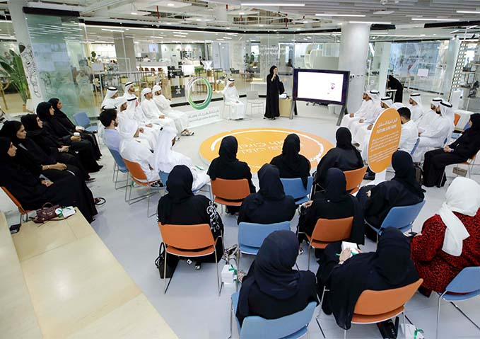

The streets of Riyadh were alive with the pulse of a city in transformation, a city where the past and future danced in harmony. Tall skyscrapers cast long shadows over traditional markets, where the scent of incense mingled with the sounds of laughter and haggling. In the heart of Riyadh, amidst its gleaming buildings and busy roads, lived a storyteller, a man named Sami, who had spent his life weaving the stories of Saudi Arabia’s rapidly changing identity. Sami had grown up in the heart of Riyadh, in a small neighborhood where the rhythm of daily life was shaped by family gatherings, the sounds of prayer calls, and the rich traditions that had been passed down through generations. As a child, he would sit in the corners of his home, listening intently to his grandparents’ tales of a time long before the oil boom, when Riyadh was a small desert town, its streets dusted with the stories of camel caravans and nomadic tribes. But as Sami grew older, the city around him began to change. The old, narrow alleys of Riyadh were being replaced by wide boulevards, new buildings were sprouting up like modern-day minarets, and the city’s population was swelling as young Saudis returned home from studying abroad. The once tranquil city was now a bustling metropolis, with young men and women carving out new lives in the fast-paced world of technology, business, and global culture. Sami found himself at a crossroads. He loved his city’s rich heritage, the traditions that had shaped his family and his community, but he also saw the pull of the future, the allure of modernity, and the opportunities that it promised. The old ways of storytelling, once a cornerstone of Saudi culture, seemed increasingly irrelevant in a world dominated by social media, streaming platforms, and 24-hour news cycles. Yet, Sami knew that the essence of his identity was rooted in those stories, in the rich tapestry of history, faith, and culture that had been passed down through his family. It was on a warm evening in late spring, as the city shimmered in the golden light of the setting sun, that Sami decided to take action. He was sitting at his favorite café in the heart of the city, watching the world rush by. His thoughts were heavy, as they often were these days, filled with questions about what it meant to be Saudi in this new era. The young people around him were absorbed in their smartphones, their faces lit by the glow of screens rather than the warmth of conversation. Sami took a deep breath and pulled out his phone. He had always been a traditionalist at heart, hesitant to embrace technology in his storytelling, but the world had changed, and he needed to change with it. He began typing, his fingers moving swiftly over the keys as he shared a story—a simple tale of Riyadh as it was when he was a child. He told of the dusty roads, the smell of freshly baked bread in the air, the sound of the old radios playing classical Arabic music in the background, and the warmth of family gatherings. It was a story that could easily have been forgotten, a story that was slipping away as the city’s skyline grew higher and its streets grew wider. He posted the story on his social media account, unsure of what kind of response he would get. His following was small—mostly his friends and family—but he hoped that by sharing these tales, he could spark a conversation, remind people of the past, and perhaps, in the process, discover what it meant to live in this new world. To his surprise, the story resonated with many. Messages began flooding in—young Saudis sharing their own memories, old photos of Riyadh before the skyscrapers, and stories of how their families had adapted to the changing world. Some spoke of their ancestors’ journeys from the desert to the city, while others shared their own experiences of returning to Riyadh after studying abroad and struggling to reconcile the modern world with their traditional upbringing. Sami found himself in the midst of a digital conversation about the city’s changing identity. People were eager to share their stories, to find ways to connect their personal experiences with the larger narrative of Saudi Arabia’s growth and modernization. As he read the comments and messages, Sami realized that there was a new generation of storytellers in Riyadh—young people who, like him, wanted to preserve the past while embracing the future. They were using the tools of the modern age—social media, blogs, podcasts, and videos—to share their stories with the world. He knew that the stories of Riyadh, of Saudi Arabia, were not just about the past—they were about the present, and the future as well. The city’s rapid transformation was a reflection of the larger forces at play in the country: the drive for economic diversification, the quest for national identity, and the desire to balance tradition with progress. But these stories, these personal narratives, were also about something deeper. They were about the ways in which people adapt, survive, and thrive in a world that is constantly changing. Sami continued to share his stories, but now he did so with a new sense of purpose. He began recording his tales, turning them into short videos that he uploaded to his social media accounts. He added music, images, and even interviews with family members and old friends, giving his stories new life. His videos became increasingly popular, and soon, he was approached by a local media outlet interested in collaborating on a series about Riyadh’s history and its evolving identity. They wanted to showcase the stories of ordinary Saudis, from the old-timers who remembered the city before the oil boom to the young people who were shaping its future. The series was a hit. It captured the imagination of both Saudis and international audiences, highlighting the complexity of Riyadh’s transformation. Sami’s stories, once shared only in small, intimate gatherings, were now reaching thousands of people. His work became a bridge between generations, a way of preserving the past while embracing the opportunities of the future. As the project gained momentum, Sami found himself thinking more deeply about the concept of identity. He realized that identity, like the city itself, was not static. It was something that was constantly evolving, shaped by history, culture, and personal experiences. The new generation of Saudis, who had grown up in a world of technology and global connectivity, were forging their own identity, one that blended traditional values with modern sensibilities. For Sami, the stories of Riyadh were no longer just about nostalgia for the past; they were about understanding how the past informed the present and how the present could shape the future. They were about finding common ground in a city that was constantly changing, a city where people from all walks of life were coming together to build something new, something uniquely Saudi. In the years that followed, Sami’s work continued to grow. He became a recognized voice in the conversation about Saudi Arabia’s cultural identity, contributing to discussions on national television, writing articles for newspapers, and speaking at conferences. But despite his newfound fame, he remained humble, always focused on the importance of storytelling as a way to connect people, to share experiences, and to build understanding. Sami’s tales of modern identity became a vital part of Riyadh’s narrative, offering a window into the city’s soul, its struggles, and its triumphs. And in doing so, he had created something timeless—stories that would continue to be told for generations to come, helping to shape the identity of a nation at the crossroads of tradition and modernity. As Riyadh’s skyline continued to rise, and its streets filled with the hum of progress, Sami’s stories became a reminder of the city’s rich past and the ways in which that past would continue to inform the future. Through his words, he had helped to preserve the essence of Riyadh—not just in its buildings or its economic achievements, but in the hearts and minds of the people who called it home. Sami’s journey into storytelling had grown far beyond what he initially envisioned. It wasn’t just about recounting the past for the sake of nostalgia; it was about creating a dialogue—one that connected the generations, bridged cultural gaps, and explored what it truly meant to be part of the rapidly transforming Saudi society. The stories he told were personal yet universal, capturing the essence of what it meant to navigate the complex interplay between preserving heritage and embracing progress. The response he received was overwhelming. His tales resonated with many across Saudi Arabia, especially in Riyadh, where the blend of old and new was perhaps most palpable. Young people who had grown up in the city’s modernized spaces felt an undeniable connection to the simpler, slower-paced stories of a Riyadh they had never known, yet could relate to in their own lives. Older generations saw in his stories a reminder of their own youth, when life seemed to move at a different pace, where the daily routines were more intimately tied to family and community. Through his storytelling, Sami had given voice to a generation that felt increasingly disconnected from the rapidly changing world around them. The digital storytelling project he had initiated with his videos grew into something bigger—an entire community of storytellers emerged. Many of Sami’s followers began sharing their own experiences, sometimes through posts or videos, sometimes through photographs of their families, their neighborhoods, and the city itself. The digital folklore Sami had envisioned started to take root, and it was thriving in ways he had not anticipated. People were contributing their stories about Riyadh’s streets, parks, and buildings, many of which had been lost in the sweeping transformation of the city. What was once a city of stone houses and sand-filled streets was now a dynamic urban space, but people longed for a sense of continuity with the past. In the process, Sami realized something crucial—Saudi Arabia, and particularly Riyadh, was in the midst of an identity renaissance. The oil boom had ushered in unprecedented prosperity, but it had also displaced centuries of tradition, both physically and culturally. There was a strong push to modernize, to join the globalized world, but at the same time, there was a palpable fear of losing the essence of what it meant to be Saudi. Sami had become a voice for that delicate balance, showing that the future and the past could coexist, and in fact, the stories of the past could guide the future. One evening, as he sat with his old friend Fahad, a fellow storyteller, Sami discussed how Riyadh had become a place where tradition was constantly being reinterpreted. Fahad, a writer and historian, had been involved in several cultural projects and often spoke about the role of culture in shaping modern Saudi identity. “You know, Sami,” Fahad said with a thoughtful expression, “the city is changing so rapidly that sometimes it feels like we’re losing touch with our roots. But then I see your videos, hear your stories, and I realize that what you’re doing is more than just nostalgia. You’re telling people it’s okay to honor our past while we evolve. It’s all part of the process.” Sami nodded, his mind racing with the implications of what Fahad had said. He had always believed that Riyadh’s identity was like a tapestry, woven with threads of history, culture, faith, and family. The city’s identity wasn’t one-dimensional, and it wasn’t fixed. It was constantly being shaped by the people who lived in it—their dreams, their struggles, their hopes for the future. That evening, Sami recorded a new video—a short documentary-style piece that looked at the evolution of Riyadh’s skyline, from the days when the old mud-brick houses dotted the horizon to the present day, when glass and steel towers reached for the sky. He included interviews with older residents who had witnessed the transformation firsthand, and he sought out young people who could articulate what they hoped Riyadh would become in the future. The video became an instant hit, not just in Saudi Arabia, but also abroad. It was shared by countless Saudis in the diaspora, who felt a deep connection to the city, even though they had been living far away for years. Some of them left comments about how much they missed Riyadh, how they felt that the city was both a part of them and yet, so different now. The comments ranged from joyful memories to a sense of bittersweetness for the places that had been lost in the name of progress. Through these exchanges, Sami realized that the city’s transformation was not just physical but emotional as well. For many, Riyadh had been a place of roots—family, tradition, culture. But as the city’s skyline shifted, so did the emotions attached to it. There was both excitement and grief in the air, as people struggled to make sense of their changing world. Sami’s next step was clear. He wanted to create a platform, a digital space, where Saudis—young and old—could share their stories, their experiences, and their thoughts on what it meant to be part of this new, evolving Riyadh. He called it the *Riyadh Chronicles*. The project was a digital archive that allowed people to upload their stories in various formats—texts, photographs, videos, and even artwork—capturing both the personal and collective experience of living in Riyadh. As the *Riyadh Chronicles* gained traction, Sami found himself in the midst of an online community that valued the preservation of culture and history in a modern context. The platform wasn’t just a place to share stories, but a living archive of the city’s evolving identity. Every day, new content was uploaded—memories of the old Riyadh, stories of how families adapted to the rapid changes, and even dreams of what Riyadh would look like in the future. Sami’s passion for storytelling was now intertwined with a larger mission—to help shape a modern identity for Riyadh that was rooted in its past yet open to the future. His work was about building bridges, not only between generations but also between the old Riyadh and the new one. He had discovered that through sharing stories, people could find common ground, celebrate their shared heritage, and together, create a vision of what it meant to be part of this dynamic, changing city. And so, in the glow of the city’s skyscrapers, as the old traditions met the new, Sami continued to tell his tales. His stories became a testament to the resilience of Riyadh’s people—a city that was constantly redefining itself, but never losing sight of the roots that had brought it to where it was today. The journey was far from over. Each day, more stories were told, more voices were heard, and Riyadh’s modern identity grew richer, more vibrant, and more nuanced. Through it all, Sami knew one thing for sure—sharing tales, old and new, was the key to preserving the soul of Riyadh for generations to come.

Sharing Tales of Modern Identity
👁️ Views: 3798
❤️ Likes: 687
📤
Comments